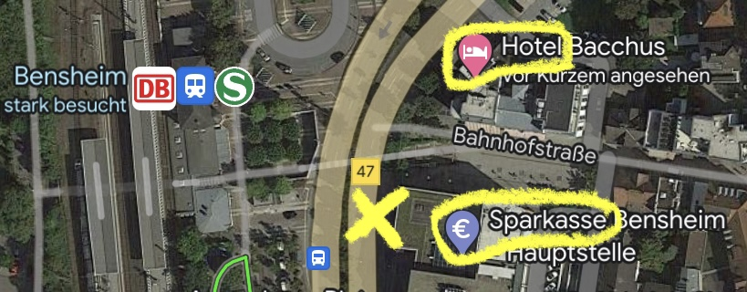

Damit Ihr ausgelassen mit uns feiern und das ein oder andere Gläschen trinken könnt, nutzt gerne unseren kostenlosen Shuttleservice! Die Fahrt dauert ca. 15 Minuten.
Hinfahrt
Abfahrt: 15:50 Uhr
Unsere zwei Busse bringen Euch vom Hotel zur Hochzeitslocation.
Wenn Ihr das Hotel verlasst, lauft die große Straße (Rodensteinstraße) ca. 50 Meter (1 min) nach links.
Vor der Sparkasse befindet sich eine Bushaltestelle, an der unsere Busse auf Euch warten. Bitte seid pünktlich, wenn Ihr den Shuttleservice nutzen wollt :)

Rückfahrt
Müde? Ab 23 Uhr stehen Euch direkt vor der Tür zwei Großraumtaxis zur Verfügung.
Lasst Euch jederzeit zurück ins Hotel bringen. Selbstverständlich kann Euch der Shuttle auch in andere Hotels in Bensheim oder Lautertal fahren.